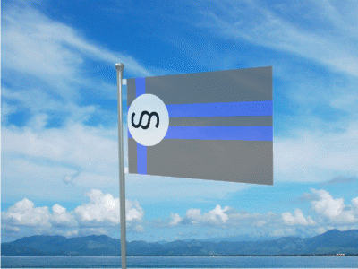

CURRENT NEWS.
PAGE LAST UPDATED ON 3/16/24
UPDATES
SIGNUP HERE

The New Wave Student Party

The NWSP or the New Wave Student Party is a student goverment party. This party is strongly for making the campus better, and stopping terrible things such as vaping. Our party is strongly for party identity. Pins with our symbol (the system section symbol or double S) and posters shall be put up for when its time for campaigning.
Is there any benifits?
Yes, there are some. First New Wave Elite and Schooltrooper members will be given a bag of corn nuts from the school canteen. And one benefit of the NWSP is that you are in a group. If you are allowed into the NWSP then you shall not be treated differently than other in your rank (meaning that Elites might not share info with you or school troopers might not share certain info.). To make it clear this means that you will not be treated worse because of how you are. Because you have already gotten into the group then you have met the standards and you should be fine. Having a group people can join and that you can join is important. The NWSP can give people something to do and help you meet new people. Brotherhood can be found here.
Who is the leader?
The NWSP is mainly led by two people. Jaden Stanwick and Owen Chick. Other members can play a part in leading but those tow mainly lead the party. The goal of the party is to get Jaden and Owen to student president and student vide president. Other student goverment figures can run through our party aswell.
What is the state of the NWSP right now?
Click here to figure out.Current programs in our party
Our current party really needs funding to do much of anything. Occasionally the group will have snack days at lunch were one of us will buy snacks for the others. And sometimes meetings will take place during recess. This party is mostly a debating society. That is a group were one brings up a problem and the others give a answer.